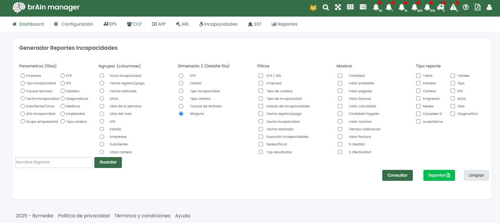
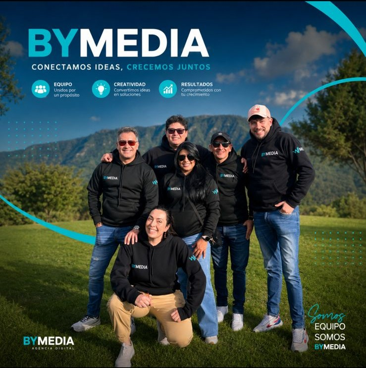
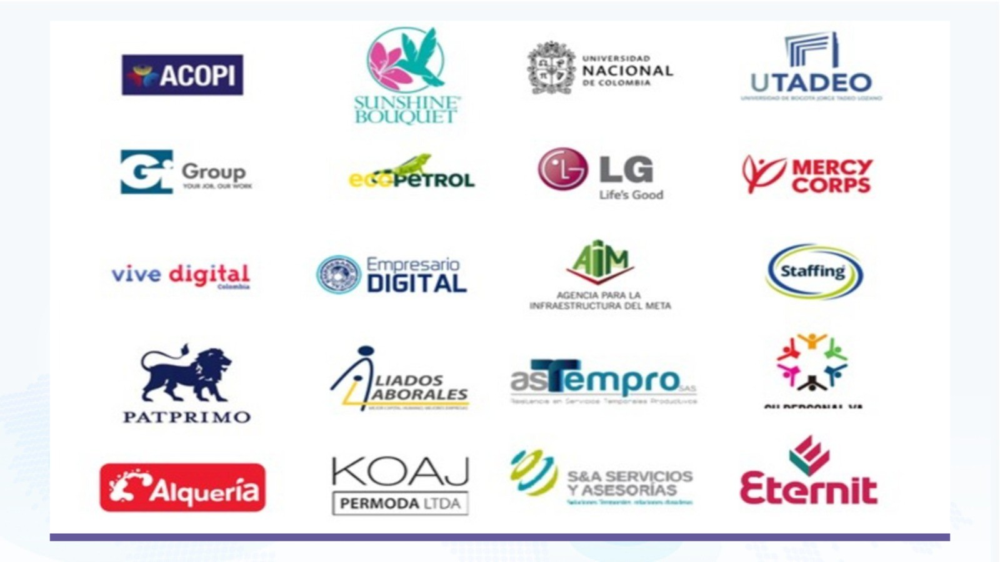

Ingeniería centrada en procesos
- Análisis profundo de flujos operativos reales
- Identificación de cuellos de botella y reprocesos críticos
- Mitigación de riesgos financieros y operativos
Software — Automatización — Inteligencia Artificial
Desarrollamos soluciones de software, automatización e inteligencia artificial que ayudan a las empresas a optimizar sus procesos y tomar mejores decisiones.
Explora
Encuentra tu punto de partida
Selecciona lo que quieres gestionar y explora cómo puede ayudarte Bymedia.
Gestiona afiliaciones a EPS, AFP, CCF y ARL, novedades de ingreso y retiro y recobro de incapacidades.
Parametriza capturas de información e indicadores de medición según los procesos de tu organización.
Consulta sobre desarrollo modular y multiplataforma, automatización RPA y soluciones de inteligencia artificial según las necesidades de tu empresa.
Conoce Bymedia
Una mirada a la empresa detrás de nuestras soluciones.
años de experiencia y capacidad técnica
desde que operamos en Colombia
servicio técnico disponible todos los días
marca país TI reconocida desde entonces
01 — Nosotros
Somos una firma especializada en el desarrollo de software a la medida, enfocada en la automatización inteligente de procesos empresariales mediante la integración de RPA e Inteligencia Artificial. A diferencia de las soluciones estándar del mercado, diseñamos arquitecturas tecnológicas basadas en los procesos reales de cada organización.
02 — Propuesta de valor
Desarrollamos soluciones a la medida y productos parametrizables para los procesos de cada organización.
03 — Metodología
La información acerca de sus procesos.
Los datos en nuestros productos.
Capturas de información, integraciones y procesos.
Los indicadores que reflejan los avances en ejecución.
Reportes y alarmas acerca de sus proyectos.
04 — Servicios
Desarrollo modular y multiplataforma, con un manejo integral y estructurado de la información, adaptado a las necesidades específicas de cada empresa.
Soluciones de IA basadas en algoritmos propios: automatización, analítica de datos, información no estructurada y soluciones conversacionales.
Procesos automatizados robóticos que reducen tareas repetitivas y aumentan la eficiencia operativa de su organización.
Aplicaciones y soluciones multiplataforma que llevan sus procesos y su información a cualquier dispositivo.
Organización, digitalización y consulta eficiente de grandes volúmenes de información de sus procesos y proyectos.
Como operador de información digital, simplificamos procesos de EPS, AFP, CCF y ARL, incluyendo el recobro de incapacidades.
05 — Productos
La flexibilidad de Cerebro permite diseñar capturas de información e indicadores de medición personalizados fácilmente. Está diseñado para el mercado colombiano y las particularidades del sector público y privado, adaptándose a los procesos de su organización con un alto nivel de parametrización.
Conocer Cerebro GerencialGestiona afiliaciones a EPS, AFP, CCF y ARL, ingresos y salidas de personal y recobro de incapacidades desde una misma plataforma. Brain Manager combina gestión de información y procesos automatizados para apoyar la operación de tu empresa.

Recobro de incapacidades
Información · Procesos · Seguimiento
Gestión de EPS, AFP, CCF y ARL.
Control de ingresos y salidas.
Procesos automatizados para apoyar la gestión del recaudo.
El valor de conectar tus procesos
Información de procesos y proyectos.
Tareas repetitivas de la operación.
Indicadores y reportes de gestión.
Soluciones a las necesidades de tu empresa.
06 — Inteligencia Artificial
Desarrollamos soluciones conversacionales, de analítica de datos y de información no estructurada según las necesidades de cada proyecto.
Soluciones para trabajar con información no estructurada.
Desarrollo de soluciones de inteligencia artificial conversacional.
Análisis de información para apoyar la toma de decisiones.
Procesos automatizados para tareas repetitivas.

Nuestro equipo
Unidos por un propósito.
Convertimos ideas en soluciones.
Comprometidos con tu crecimiento.
Somos equipo, somos Bymedia.
08 — Clientes

Antes de conversar
Brain Manager se enfoca en afiliaciones y recobro de incapacidades. Cerebro Gerencial permite parametrizar capturas de información e indicadores. También puedes consultar por un desarrollo a la medida.
Solicita una demostración a través del contacto de esta página y cuéntanos qué proceso quieres explorar.
Describe el proceso actual, las herramientas que usas y el problema que buscas resolver. Esto ayuda a iniciar una conversación sobre tu proyecto.
09 — Contacto
Información
+57 316 523 2136 rsanchez@bymedia.com.coBogotá, Colombia
Lunes – Sábado: 8:00 – 18:00
Domingo y festivos: 9:00 – 12:00
Servicio técnico disponible 24/7